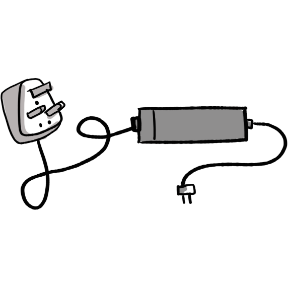
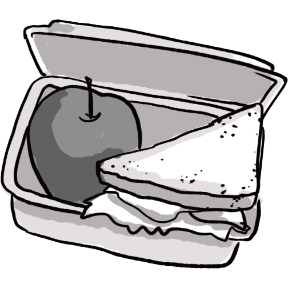
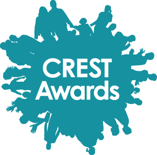

Information for Participants
If you are coming from outside the UK to the Festival of Code as an international participant, click here.
Preparation
We are happy to welcome coders of all ages and experience levels to our Festival of Code. Whether you are just learning basic HTML or are a seasoned coder fluent in 5 different programming languages, you will fit right in! To brush up on your coding skills, check out our resources page for tutorials.
Before the start of the week, make sure you have your preferred development environment set up so you can get straight to hacking and not waste any time. You can write any languages or use any tools you like during the week.
You must bring your signed media release forms (we'll make sure you get these in advance), laptop with power supply, lunch, money for travel and clothes for the weekend.
It's also advised that you take a look at our resources page before the week to look at the data sets that we've found from accross the web.
If you plan on coming to the weekend (which we'll assume you are), then we advise that you bring something to sleep on. A sleeping bag and roll mat make the most sense, but we've had people bring inflatable matresses in previous years.
The Week
Each centre will run its own hours, but most will be around 10am-4pm. Once assigned to your local centre in June, your centre lead will give you all the information that you need to know about your centre.
You will arrive to your assigned centre on Monday morning where you will be introduced to the other participants and mentors in your centre.
During the first few hours, you will start to think of an idea to build during the week. Most people will form teams to work in, but you can also choose to work alone. Building you project will include finding relevant data and delegating tasks between members of the team. This stage is normally hectic, so you shouldn't feel bad if you have to ditch some of your initial ideas. Your mentors can help you finalise your idea.
From late Monday to Thursday, you will be building your ideas in your team. Most mentors are already established developers, designers and business people - so feel free to ask them for as much help as you need.
Food provision during the week varies from centre to centre - some provide food and some will require you to take packed lunches, but this will be communicated to you by your centre lead closer to the time of the event.
The Weekend
On Friday, you will be travelling to the finale in Plymouth with your centre. Plymouth may sound really far away but we are making travel super-easy so you can join in wherever you are. The travel arrangements will be organsied and communicated by your centre lead, who will let you know about them closer to the event. The only thing we expect you to pay for during the event is this travel, so just be aware of this. On Friday night, you will be camping indoors at Plymouth University and will be organised based on centre and age group.
The finale will be split into three parts. The first part will take place on Saturday morning, where participants will be split into five streams (you are streamed based on your centre). The winners from each stream will then go head-to-head in the semi-finals on Saturday afternoon. The grand finale will take place on Sunday morning at a big concert venue called Plymouth Pavilions.
Everyone is also invited to stay over on Saturday night (whether you're in the final or not) and come and support the finalists on Sunday morning. The whole event should be over by midday on Sunday.
Food will be provided throughout the weekend and there will be vegetarian options, but if you have any other special dietary requirements then you will have to either bring their own food or some money to buy suitable food at the cafes around campus.
What to bring for the weekend
- Toiletries (toothbrush/paste, soap, shampoo, towel, etc)
- Changes of clothes (casual) for Saturday and Sunday, and pyjamas
- Sleeping kit (blanket, pillow, sleeping bag, etc)
- Your laptop and any laptop accessories
- Chargers for all devices 
- Money for snacks (pizza is provided, but there will also be food stands) 
- Your guardian (if aged 13 and under)
Please also remember to bring any medication you may need during the weekend!
Parental Permission for Plymouth
- 13 & UnderA parent must be with you for the whole weekend. If you are unable to have an adult come with you on the weekend, then you are still able to attend Monday-Thursday at your centre.
- 14 - 17You will need a signed permission slip which we will provide to you before the week. We would like this back on the first day of the week.
- 18No permission required.
Hardship fund for travel expenses
The hardship fund has been kindly sponsored by Google and is available to assist kids with their travel expenses, if they would otherwise be less able to participate in the Festival of Code. We cannot guarantee to provide all the assistance asked for, but everyone who is eligible will receive at least some help. Please print and complete this form and then either scan and email it to ruth@rewiredstate.org or post it to:
Young Rewired State 7 Bellevue Road Barnes London SW13 0BJ
Change of Details
It's important that we can get all information to you before the event. If any of your details (such as phone number or email address) change after you have signed up, please contact us with the updated information.
The CREST Awards
CREST is an easy-to-run STEM enrichment scheme in the UK, endorsed by UCAS for use in personal statements. It allows 11-19 year olds to build skills and demonstrate personal achievement in creative STEM (science, technology, engineering and maths) project work supporting their curriculum-based learning. CREST is run by the British Science Association, accredits over 35 other national schemes and offers tangible benefits to both students and teachers. CREST Awards can now also be used toward a ‘skill’ section in the Duke of Edinburgh’s Award scheme at the corresponding level. Find out more at: www.britishscienceassociation.org/crest
Code of Conduct
The Festival of Code is a community event. We want everyone that takes part to have a mutual respect for one another. This includes participants, mentors, centre leads, and parents.
Exclusion, bullying, disrespect or abuse will not be permitted. If any misbehaviour happens at any centre, those involved will not be able to attend the weekend in Plymouth. If any misbehaviour happens while in Plymouth, those involved will not be able to present.
We appreciate your cooperation and know this will be a great event for everyone involved!